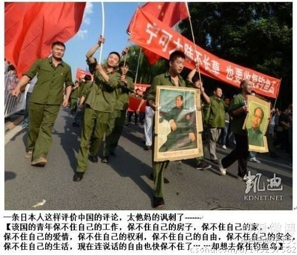

Conversation with 81184027 at Tue 14 Jan 2014 12:00:58 PM CST on 154115835 (webqq)
(12:00:58 PM) 2625928455: 共享文件 1 个 00:59:27
qun.qq.com/god/images/share-other.gif 高中生处女偷拍.rar
立即下载查看全部
(12:00:58 PM) 2625928455: 共享文件 高中生处女偷拍.rar
(12:00:58 PM) Sweat: 共享文件 1 个 00:59:27
qun.qq.com/god/images/share-other.gif 高中生处女偷拍.rar
立即下载查看全部
(12:00:58 PM) Sweat: 共享文件 高中生处女偷拍.rar
(01/14/2014 12:59:27 AM) Sweat:
(12:08:28 PM) 光: Sweat: 共享文件 1 个 00:59:27
qun.qq.com/god/images/share-other.gif 高中生处女偷拍.rar
立即下载查看全部
(12:00:58 PM) Sweat: 共享文件 高中生处女偷拍.rar
(01/14/2014 12:59:27 AM) Sweat: 你发这个做什么呢
(12:11:06 PM) 渊泽雨: 这是什么
(12:11:15 PM) 渊泽雨: 发这个干什么
(12:11:38 PM) 光: 有可能是病毒
(12:11:54 PM) 光: 我在linux下
(12:11:56 PM) 渊泽雨: 谁发的
(12:12:01 PM) 光: 不方便查看
(12:12:05 PM) 光: Sweat
(12:12:56 PM) 光: QQ: 739436787
昵称: Sweat
备注
签名
等级: (0)
性别: 男
生肖:
星座:
血型:
生日: -1-11-30
国家: 中国
省份: 福建
城市: 福州
电话:
手机: -
邮箱:
职业:
学校:
主页:
(12:13:11 PM) 光: 这样的人有一个特点
(12:13:18 PM) 光: 你要真问他些什么
(12:13:24 PM) 光: 这些人一声不吭
(12:14:28 PM) 光: 你要把他们清理出群的话
(12:14:36 PM) 光: 不久换一个帐号还来
(12:15:38 PM) 埃及无雪: 没有qq信誉度的就不加
(12:15:48 PM) 埃及无雪: 新号也不加
(12:16:03 PM) 光: 最好的制度是推荐人制度
(12:16:10 PM) 光: 一律不加
(12:16:19 PM) 光: 先填写登记表再加
(12:16:25 PM) 光: 有人介绍加
(12:16:40 PM) 光: 可以保证成员质量
(12:17:10 PM) 光: 预备组目前就是这样的
(12:17:17 PM) 光: 但是缺点是人会比较少
(12:17:40 PM) 埃及无雪: 是的，推荐人那个有点不靠谱
(12:19:17 PM) 光: 还有一种方法就是
(12:19:23 PM) 光: IRC方式了
(12:19:30 PM) 光: 那就不存在群这个概念了
(12:19:44 PM) 光: 随便什么人都可以登入
(12:20:05 PM) 光: 随时聊随时撤
(12:20:10 PM) 埃及无雪: 然后？
(12:20:14 PM) 埃及无雪: 哦
(12:20:23 PM) 光: 然后设置机器人同步
(12:20:33 PM) 光: Gtalk联系人
(12:20:45 PM) 光: 技术基本上我已经知道怎么做了
(12:20:51 PM) 埃及无雪: 貌似会放入更多的杂人进来
(12:21:04 PM) 光: 那个可以设置多个管理
(12:21:06 PM) 光: 问题不大
(12:21:12 PM) 光: 都有踢人的权限
(12:21:49 PM) 光: 之所以没做
(12:21:54 PM) 光: 就是那个需要服务器的
(12:22:02 PM) 埃及无雪: 哦
(12:22:08 PM) 光: 每年有固定的维护费用
(12:22:27 PM) 光: 暂时没考虑
(12:22:41 PM) 光: 建立一个IRC频道不难
(12:22:59 PM) 光: 加上一些扩展功能什么的
(12:23:06 PM) 光: 也不难
(12:23:43 PM) 光: 目前做这个我还是尽量不想产生什么费用
(12:23:58 PM) 埃及无雪: 嗯，是的，没必要呢
(12:24:06 PM) 光: 嗯
(12:24:43 PM) 光: 09年一开始
(12:24:49 PM) 光: 我都没考虑用qq群
(12:24:56 PM) 光: 打算用google群组
(12:25:04 PM) 光: 那个维护成本最低了
(12:25:08 PM) 光: 就是邮件列表
(12:25:23 PM) 光: 不过大多数人对网络不了解
(12:25:33 PM) 光: 这个东西没有推广开
(12:25:45 PM) 光: 就舍群组就qq群了
(12:26:06 PM) 埃及无雪: 是啊，qq最好用，不然很多进不来
(12:26:19 PM) 光: 国外的话
(12:26:29 PM) 光: 一般还是走新闻组的模式
(12:26:39 PM) 光: 国内还是习惯用qq了
(12:26:51 PM) 光: 估计很少人用新闻组
(12:26:55 PM) 光: 甚至不知道
(12:27:01 PM) 埃及无雪: :可怜::可怜::可怜:
(12:27:05 PM) 埃及无雪: 是的
(12:27:56 PM) 光: 在国内最后都是一些通俗的应用胜出了
(12:28:14 PM) 光: 真正好的应用反而用户群有限
(12:29:26 PM) 光: 从我们做技术的角度看
(12:29:32 PM) 光: qq卖点真的不多
(12:29:42 PM) 光: 但是qq能做这么大
(12:29:49 PM) 光: 真的出乎意料
(12:30:28 PM) 埃及无雪: :D:D
(12:30:39 PM) 埃及无雪: 老板有后台呢
(12:30:48 PM) 光: 大概就是源于傻瓜话
(12:30:50 PM) 光: 化
(12:30:54 PM) 光: 上手特别容易
(12:31:00 PM) 埃及无雪: 接地气
(12:31:01 PM) 埃及无雪: :D:D
(12:31:05 PM) 光: 嗯
(12:31:12 PM) 光: 接地气
(12:31:42 PM) 埃及无雪: 高处不胜寒，做人亦是哪:D:D
(12:31:57 PM) 光: 我在05年之前都是以上新闻组为主的
(12:32:21 PM) 光: 09年之前
(12:32:27 PM) 光: 则是各大bbs
(12:32:38 PM) 光: 那是telnet的时代
(12:33:08 PM) 光: 99年
(12:33:11 PM) 光: 说错了
(12:33:59 PM) 埃及无雪: :D
(12:35:01 PM) 光: 電子佈告欄系統（英语：Bulletin Board System，缩写BBS）是一種網站系統，是目前流行網路論壇的前身，它允许用户使用终端程序通过调制解调器拨接或者因特网来 进行连接，BBS拥有公告、討論區、阅读新闻、下载軟體、上传数据、和与其它用户線上對話等功能。在BBS初期發展時，大部份BBS是由站长（通常被称为 SYSOP，SYStem OPerator，原意为系统操作员）业余维护，在中後期開始有一些BBS商業站台提供收费加值服务。 早期BBS的型態大多在終端機上以單色或彩色的純文字呈現畫面，並使用调制解调器拨接或telnet協議連接。但隨著HTTP網路協議及HTML等網頁技術的發展，BBS的型態也轉變為网络论坛或網路社群等多元樣貌，然而在香港、台灣以及中國大陸等地的學校中，telnet方式的BBS系統仍然盛行，由於调制解调器撥接方式的BBS早已式微，故在香港、台灣以及中國大陸等地的「BBS」一詞，通常是專指telnet方式的BBS系統。
(12:54:26 PM) 光: 中国网络审查的背景 中国互联网络信息中心（CN-NIC）于2009年1月发布了《第23次中国互联网络发展状况统计报告》，根据该报告，截至2008年年底，中国上网人数达到2.98亿人，宽带上网人数为2.7亿人，手机上网人数有1.176亿人。互联网的普及率达到了22.6%。中国网民规模超过美国，位居世界第一。中国人上网主要是阅读信息、网络游戏、网络交流与交往、收寄电子邮件，利用网路从事商业活动的人数也在稳步增加。中国的互联网用户正以每月5%至6%的速度增长，中国网民人数就很快将达到人口的四分之一，或略超过2亿5千万人左右。有部分专家认为“对于个人通讯和特别是来自海外的信息，从建立互联网的第一天起，中華人民共和国政府就开始了网络审查。”近年来，多部为互联网制定的法律也开始在中国实行。 以互联网和数码技术为基础的新媒体给中国的发展带来机遇，但却给当局的言论控制带来挑战，也使中国共产党这个执政党的封闭式管理产生难题。 2005年4月，由哈佛法学院、剑桥大学和多伦多大学共 同组建的“开放网络促进会”（OpenNet Initiative）发表了一份关于中国网络封锁的研究报告。报告称：“中国的网络过滤系统是全世界最发达的。比起其他有些国家的类似系统，中国的网络 过滤范围广，手法细致，并且效果显著。整个制度包括多层次的法律限制和技术控制，牵扯到众多的国家机构，以及成千上万的政府职员和企业员工。” 時任中国国家主席江泽民在2000年接受迈克·华莱士专访时说：“我希望人们将从网上学习很多有用的事情，但无论如何，网上有时也有不健康的东西，特别是网上的色情内容──对我们的年轻人伤害很大。”BBC和华盛顿邮报等没有色情的网站“被禁可能是因为有些政治消息的报导。我们需要有所选择，我们希望尽可能地限制对中国发展无用的信息。”[2] 有观点认为金盾工程是由前中共中央总书记、国家主席江泽民的长子中国科学院副院长、中国网通董事江绵恒所筹建与负责。[3]而实施网络审查最重要的设备防火长城，其关键部分的设计师为中国工程院院士、前北京邮电大学校长方滨兴，他也被网民称之为“中国防火墙之父”。 法律依据与规定 中国政府对网络内容进行审查的原因和方式是多样、多层次、跨部门的，對网络的审查是从“互联网接入服务提供者”到“各级人民政府及有关部门”的责任。中国对国内网站实行审查的具体法律依据详见外部资料中法规一览[4]。 主要法律、法规、司法解释 《全国人民代表大会常务委员会关于维护互联网安全的决定》 《互联网信息服务管理办法》 《互联网电子公告服务管理规定》 《互联网站从事登载新闻业务管理暂行规定》 《互联网出版管理暂行规定》 《互联网文化管理暂行规定》（2003年7月1日） 《关于网络游戏发展和管理的若干意见》 《互联网IP地址备案管理办法》（2005年3月20日） 《非经营性互联网信息服务备案管理办法》（2005年3月20日） 《最高人民法院、最高人民检察院关于办理利用互联网、移动通讯终端、声讯台制作、复制、出版、贩卖、传播淫秽电子信息刑事案件具体应用法律若干问题的解释》 《中国互联网行业自律公约》（2002年4月24日） 《互联网站禁止传播淫秽、色情等不良信息自律规范》（2004年6月10日） 《中国互联网网络版权自律公约》 《互联网著作权行政保护办法》（2005年5月30日） 《互联网医疗卫生信息服务管理办法》 《互联网药品信息服务管理办法》 《计算机信息网络国际联网保密管理规定》（2000年1月1日） 《计算机信息系统安全保护条例》 《计算机信息网络国际联网管理暂行规定》 《计算机信息网络国际联网安全保护管理办法》 《互联网上网服务营业场所管理条例》 《关于互联网中文域名管理的通告》 具体依据条款 2000年12月28日中华人民共和国第九届全国人民代表大会常务委员会第十九次会议通过的《全国人大常委会关于维护互联网安全的决定》第七条 各级人民政府及有关部门要采取积极措施，在促进互联网的应用和网络技术的普及过程中，重视和支持对网络安全技术的研究和开发，增强网络的安全防 护能力。有关主管部门要加强对互联网的运行安全和信息安全的宣传教育，依法实施有效的监督管理，防范和制止利用互联网进行的各种违法活动，为互联网的健康 发展创造良好的社会环境。从事互联网业务的单位要依法开展活动，发现互联网上出现违法犯罪行为和有害信息时，要采取措施，停止传输有害信息，并及时向有关 机关报告。任何单位和个人在利用互联网时，都要遵纪守法，抵制各种违法犯罪行为和有害信息。人民法院、人民检察院、公安机关、国家安全机关要各司其职，密 切配合，依法严厉打击利用互联网实施的各种犯罪活动。要动员全社会的力量，依靠全社会的共同努力，保障互联网的运行安全与信息安全，促进社会主义精神文明 和物质文明建设。 《中国互联网行业自律公约》第十条 互联网接入服务提供者应对接入的境内外网站信息进行检查监督，拒绝接入发布有害信息的网站，消除有害信息对我国网络用户的不良影响。 根据公安部33号令《计算机信息网络国际联网安全保护管理办法》第五条规定 第五条 任何单位和个人不得利用国际联网制作、复制、查阅和传播下列信息： （一）煽动抗拒、破坏宪法和法律、行政法规实施的； （二）煽动颠覆国家政权，推翻社会主义制度的； （三）煽动分裂国家、破坏国家统一的； （四）煽动民族仇恨、民族歧视，破坏民族团结的； （五）捏造或者歪曲事实，散布谣言，扰乱社会秩序的； （六）宣扬封建迷信、淫秽、色情、赌博、暴力、凶杀、恐怖，教唆犯罪的； （七）公然侮辱他人或者捏造事实诽谤他人的； （八）损害国家机关信誉的； （九）其他违反宪法和法律、行政法规的。 从而导致在互联网上查阅违法信息也为违法[5]。而这些被称为“法律”的文件，本身存在合法性争议问题。 2008年1月31日起施行的《互联网视听节目服务管理规定》规定 申请从事互联网视听节目服务的，应当具备法人资格，为国有独资或国有控股单位，且在申请之日前三年内无违法违规记录。亦即互联网视听服务的企业必须为国有，非国有独资或者国有控股企业不能再经营互联网视听服务。 此规定一出就引发了对其合理及合法性的质疑 [6][7]。 法律、法规禁止的网络内容和网络行为 反对宪法确定的基本原则的； 危害国家统一、主权和领土完整的； 煽动抗拒、破坏宪法和法律、行政法规实施的； 泄露国家秘密，危害国家安全或者损害国家荣誉和利益的； 煽动民族仇恨、民族歧视，破坏民族团结，或者侵害民族风俗、习惯的； 破坏国家宗教政策，宣扬邪教、迷信的； 散布谣言，扰乱社会秩序，破坏社会稳定的； 宣传淫秽、赌博、暴力或者教唆犯罪的； 侮辱或者诽谤他人，侵害他人合法权益的； 危害社会公德或者民族优秀文化传统的； 损害国家机关信誉的； 煽动非法集会、结社、游行、示威、聚众扰乱社会秩序的； 以非法民间组织名义活动的； 含有法律、行政法规禁止的其他内容的。[8] 地方立法 2007年12月20日，广东省十届人大常委会第三十六次会议上通过《广东省计算机信息系统安全保护条例（草案修改三稿）》。其中规定： 在发生重大突发事件，危及国家安全、公共安全及社会稳定的紧急情况下，可以采取二十四小时内暂时停机、暂停联网、备份数据等措施。 中国网络审查的措施 中国因特网服务提供商中国电信在当用户输入错误或无法解释的网址时就会显示旗下互联星空114网站，但此网站的内容不雅。 1995年以来，中国政府已经颁布了60多项法规来规范互聯網活动。在2000年代初政治状况比较敏感的日子，政府要求网管对法轮功和六四等题材的政治網站進行严格封锁，对国内日益泛滥的色情信息却还没有显示出足够的关心与重视。自2004年中，这种情况开始有所改变，有关当局开始大力打击网上色情。 行政手段 網絡监控 政府辖下公安部门（主要是网警）、国家安全部门、新闻管理部门、通信管理部门、文化管理部门、广播电影电视部门、出版部门或保密等部门的工作人员，监控全中國大陆的论坛、网志、聊天室和私人的即时通讯、电子邮件等 互联网资讯。要过滤和获取有关情报信息，他們通常使用的技术有域名劫持、关键字过滤、网络嗅探、网关IP封锁和电子数据取证等等。這些工作人員會判断内 容，严格禁止、删除各类被认为是有害的信息；查禁、封堵和阻断可能会利用互联网造谣、诽谤或者发表、传播的有害信息，例如關於“煽动颠覆国家政权、推翻社会主义制度”、“煽动分裂国家、破坏国家统一”、“煽动民族仇恨、民族歧视，破坏民族团结”、“窃取、泄露国家秘密”、邪教和淫秽的信息。同時對特定人群實行網絡監視，並後台阻斷敏感人士的網絡通信。 另外，從2006年5月起，有关部门開始招募网络监督员。他们定期接受相关部门的指导，利用业余时间监察网络出现的“不文明行为、违法和不良信息”，及时通过电话、电子邮件、不定期参加会议等方式向相关单位提出监察意见。[9]有些网络安全保安分公司，會招收网络保安员。网络保安没有执法权，他們主要通过网络监控，为服务单位及时删除各种不良信息，及时叫停违法行为，向网监部门报警。[10][11] 實施行政處罰和司法追究 各国都对違反網絡相關法律進行處罰和追究，但中国相对更严厉，不仅仅是发表、制作政府认为不良信息的人会面临处罚，甚至阅览相关信息者也可能依照公安部的规定被行政处罚[12]，后一点引发中国国内的争议。同时，由于发表或传播网络言论、信息而入狱者也为世界最多。 政府及网评员引导网上舆论 除了被动地封网之外，中国政府也大力发展官方网站，积极进行网上宣传。香港城市大学的李金铨教授说，中国全部网站的10%是由政府直接建立和经营的，各级政府建立了多个主要新闻网站。 由半公开和公开（如江苏宿迁市）的消息，政府招收网络评论员，由他们以普通网友的身份，引导“正确导向”，普及“党和政府的方针政策”。这种网络评论员被大陆网民称为“五毛党”。 实名制与备案 1997年12月11日国务院批准、1997年12月30日公安部发布了《计算机信息网络国际联网安全保护管理办法》。《管理办法》第十一条明确规 定：“用户在接入单位办理入网手续时，应当填写用户备案表。备案表由公安部监制”，要求通過ISP接入互聯網的個人與單位在公安部門備案，留存個人與單位 信息。在此之前，這些資料只在ISP留存，或者由ISP向公安部門遞交。 相关规定在1999年下半年，即中國的第一次互聯網高潮時開始执行。2002年後很長的時間裡，相關備案的執行弱化。在2006年7月，重慶市公安局出台了《关于加强国际联网备案管理的通告》，要求在家中上网须向公安机关备案，如有違反，轻则将被警方警告，重则将被停机半年[13]。雖然早有相關規章依據，但在新一波的網絡言論收縮的背景下，該規定引發極大的關注與爭議。可能是迫于舆论压力，该《通告》在之后的审核中未予通过。 另外，當局也要求对网络接入、网吧、信息发布网站、电子邮件甚至游戏等实名备案。特别是2005年2月份以来，信息产业部要求境内所有网站主办者必须通过为网站提供接入、托管、虚拟主机等服务的IDC、ISP来备案登记，或者登录信息产业部备案网站（miibeian.gov.cn）自行备案。无论是企、事业单位网站，或是个人网站，都必须在备案时提供有效证件号码。 在中华人民共和国境内提供经营性和非经营性互联网信息服务，必须以实名制履行备案手续。未经备案，不得在中华人民共和国境内从事互联网信息服务。 2010年，重庆市以“打击黑恶势力”为由，制定法规要求强制执行网络实名制，并监控腾讯QQ群，民众短信等内容。此举引发广泛争议。 約束IDC與虛擬主機業者及客戶 將未備案網站全部關閉，網站必須已備案，才能掛出，請將已備案網站域名列表交由業者統一制表報各省通管局及網監處（網上信息內容必須合法，不能出現「十一不准」內容。）請對照上述的“实名制与备案”。 交互式欄目一律關閉。（交互式含：論壇、博客、留言板） 提供該網站的管理員用戶名和密碼，以備在不能處理刪除信息時由技術人員代行處理。 2007年9至10月為嚴查期，如在這段時間出現網上不法信息，將會導致整個數據中心機房被強行關閉，後果將非常嚴重。 如因網上不法信息造成斷網，在有關部門允許機房開通的情況下，該機房內的服務器將不能被開通，直至檢查期結束，由機房清除不法信息，並保證不會再有不法信息的情況下才能再次開通。 各網站原始資料必須保存60天以上，在有關部門要求提交資料的情況下，如機房不能提交，將按有關處理辦法執行處罰。 必須安排專人24小時管理網站信息，即24小時都能聯繫上人。 須建立操作權限管理制度，用戶實名登記制度、網絡安全漏洞檢測和系統升級管理制度。否則在檢查過程中將會被相關部門按有關處理辦法執行處罰。 要求国内外公司合作 中国政府采用思科、北方电讯、甲骨文公司、3Com和微软等外國公司提供的技术来封锁网络，并命令网络公司帮助政府过滤“敏感”言论。微软在中国的MSN博客空间（已关闭，最后名称是Windows Live Space）设置了过滤器。Google在2006年1月推出Google.cn的時候，任何有违背中国政府的内容都被过滤，例如其news.google.cn上的中国版新闻上拿掉了被中国政府封锁网站内容的存档。雅虎中国更被指帮助中国当局调查网上异见人士（见师涛“非法向境外提供国家机密”案）。 下列是中国政府要求境外公司进行网络审查的案件，这些情况只存在于中国大陆： 中国雅虎的网页已被阿里巴巴收购，与雅虎集团其他国家的网页颜色及风格几乎完全不同[14]，是一个除了“雅虎”名称与Yahoo还有关联以外已完全独立的网站，雅虎的国际服务（例如Flickr）在雅虎中国无任何链接。而雅虎所有国家版本的视频内容均被防火长城封锁。另外中国雅虎的搜索引擎也屏蔽了维基百科的网址。 中国版TOM-Skype（非简体中文国际版），是TOM集团旗下北京讯能网络有限公司TOM在线和Skype于2004年11月在中国大陆联合推出的Skype中国版即时通讯软件。Skype指TOM-Skype在2006年已經按照中国政府的规定，使用文本过滤器来监控敏感信息。不过包含敏感关键字的信息会在客户端被丢弃，故对用户的隐私并无威胁。TOM集团在声明中称：“作为一家中国公司，我们必须遵从中国的规章制度。我们对此没有其他评论”。[15]不过，TOM-Skype后来在未经Skype同意的情况下擅自改变了该过滤器的功能，存储了部分用户的信息。随后，Skype的总裁Josh Silverman在Skype官方网志上发表声明，表示自己公司很“无辜”和“无奈”。[16]受此影响，微軟於2013年第一季在全球用Skype替換Windows Live Messenger的方案，將中國大陆排除在外。[17] 2007年4月底，MySpace推出中国版网站MySpace.cn聚友。新闻集团以在该国境内成立独立公司的模式，找来本地人营运聚友。然而科技新闻网站Tixyt.com发现，聚友有政治审查现象：网站架构与其他国家的MySpace相近，论坛区却未见各国最热门的政治与宗教议 题；网站另设「举发不当内容」的对话方块，呼吁网友举发站内任何涉及「危害国家安全、泄露国家机密……或干扰社会秩序」的发言；张贴有「台独」、「法轮 功」、「达赖喇嘛」等政治敏感字眼的发言时，会显示下列信息而无法张贴：「抱歉，您想张贴的文章恐有不当内容。请删除不当字句后再行发表，谢谢。」对此， 聚友声明：「本公司是本国人拥有、营运与管理的公司，遵守本地法律与执法要求。」 微软的Bing（必 应）搜索引擎中国版（cn.bing.com），服务器位于美国，因其会按照当局的意思动态审查政治词汇，故受到的干扰或封锁次数较少。搜索时，如果结果 被隐藏了某些已知网页，页面底部即会显示“依据中国的法律法规，我们屏蔽了特定的相关搜索结果。有关详细信息，请参阅此处。” 在中国大陆售卖的装有Android操作系统的代理商入口智能手机，几乎所有厂商，包括摩托罗拉、三星、HTC等，均把Android附带的所有Google应用程式删除，例如提供影片分享及下载的「YouTube」、官方应用商场「Google Play」、社交网络服务「Google+」及「Gmail」等。中国大陆用户需要自行重新刷机或破解Root权限后，重新安装程序才能使用Google相关的应用服务。但装有Android系统的水货智慧型手机，譬如HTC并没有在中国大陆正式发售过的HTC Legend等机型，则不受此影响。另外，基于ISP基站和Wi-Fi定位的功能同样被隐藏或删除，用户只能使用GPS定位。在2012年5月4日传出的工业和信息化部对“Google”商标及应用进行限制的消息，其内容为：移动终端产品出厂不允许有Google字样及相关应用，包括Google标识、应用，包括Google搜索、Google书签和Google浏览器等与有关的字样，违者不进行任何行政审批。[18]工信部後来否认此事。[19] 在Google地图中，国际版（含其他地区版，中国版除外）地图中，中国大陆地图出现严重偏差，整块中国大陆向东南偏东错误移位约半公里，而卫星视 图则正常。造成位置错误的原因是中国官方要求所有在中国运行的地图服务商要加装“国家保密插件”（亦称加密插件、加偏或SM模组），以“保障国家安全”。 此插件会将真实的坐标加密成虚假的坐标，且此加偏并非线性加偏，所以各地的偏移情况都会有所不同。一些国际性的互联网应用服务（如Foursquare等apps），通常使用国际版地图的API来显示位置，这会造成显示中国地图视图时出现偏差、漂移的情况。Android等手机在中国使用GPS定位也会出现不准确的情况。国家测绘地理信息局在2012年2月宣布，Google在华合资公司北京谷翔信息技术有限公司已于2011年11月提出互联网地图服务测绘资质申请，在资质审批过程中，其互联网地图服务可维持现状，但不得增加新的互联网地图服务内容。[20]这意味中国版地图被当局禁止推出街景服务。 2013年4月，《每日电讯报》及《金融时报》有报道称，苹果公司为了“取悦”中共，主动从应用市场iTunes Store的中国区中取消了一个网络应用程序“经典书城”，而这款软件可以让读者看到一些被中国政府禁止的10本书。而就在此前，苹果公司首席执行官蒂姆·库克向中国顾客就苹果公司的售后服务作出道歉。此前，苹果受到中共喉舌媒体长达数日的尖锐批评，称苹果的售后服务“内外有别”等。[21]有分析认为，此次官方围剿苹果公司，更可能是向苹果施加压力，目的在于推动苹果与中国官方合作，将中国区的苹果应用市场推广“备案”制度，将其纳入中国官方的审查监管大网。在本次事件发生前，香港独立时政杂志《陽光時務週刊》，在中国区原有ipad客户端，大陆用户可自由下载购买，但有部门要求苹果将其下架，苹果随后照办。[22]另外，苹果公司也按照当局的要求，注册中国域名apple.com.cn并在工信部与北京市公安局申 请ICP证（10214630）及网络安全备案号（11010500896）以挂于首页底部。而这些在世界上其他国家都并不需要，像中国以外其他国家或地 区的域名均统一使用apple.com/xx，例如德国是apple.com/de，香港是apple.com/hk，别国政府均没有如中国般要求其必须 申请当地域名及申请ICP等证的案例。[23] TripAdvisor在中国大陆推出的中国版网站到到网，也不得不向中国官员证明，其中国版网站将会删除与西藏有关的讨论。[21]并且，页面底部的“其他国家TripAdvisor站点”也删除了台湾版网站的链接。 還有，當局以法规的形式要求互联网服务提供商（ISP）互联网内容提供商（ICP）不得制作、复制、发布、传播任何被认为有害的信息。如发现后，应当立即停止传输，保存有关记录，并向国家有关机关报告。 譴責與處罰海外公司 中國大陆預定於2009年7月1日起，要求在境內新生產和銷售的電腦進行全面預裝綠壩·花季護航。中國政府稱安裝軟體的目的在於保護未成年電腦使用者，誤闖入色情網站等有害內容。然而该软件和政府大规模的推行软件预装措施招致诸多媒体异议。 在政策推行前夕，中共喉舌媒體於2009年6月高調譴責Google傳播色情資訊，並一度對Google旗下的服務進行封鎖。 根據中国中央电视台2009年6月的《焦点访谈》，在Google中输入关键字“儿子”，它下面却出现了这样的一些选项“儿子母亲不正当关系”等等十个选项。[24] 根据Google自己的数据，“儿子母亲不正当关系”这个关键词，在2009年6月18日央视“三板斧”使用三个主力新闻节目报道出这个事件，中共 喉舌媒体密集批判谷歌中国之前一个周，搜索量才开始急剧上升，在也就是6月17号达到巅峰，并且这些搜索近100%都是由北京的用户完成的。[25] 网吧管理 中國政府要求網吧上网者实名登记，同时要求网吧必须安装“网吧安全管理软件”。同时也规定各省市网吧必须安装“文化监管系统”，控制并及时封锁任何对当局不利的文章。 由国务院制定条例要求网吧经营者： 建立场内巡查制度，发现上网消费者的违法行制止并向文化行政部门、公安机关举报。 核对、登记并保存上网消费者的有效身份证件和记录有关上网信息。 2007年6月3日，国家工商总局通过网站发布通知，各级工商机关在2007年不得登记新网吧[26]。各地也纷纷出台不再审批新网吧的规定。 网络举报 各级政府和部门都纷纷建立举报网站及电话，用来接收对政治、色情暴力等有社会危害内容的网站进行举报。如公安部公開的举报电话為010-65283344、010-65207655，举报网站为 http://www.cyberpolice.cn ；中国互联网协会的违法和不良信息举报中心 http://net.china.cn/ 。 然而截至2006年4月24日，公安部的舉報網站上面只能看到寥寥可數的幾條消息，這一方面可能由於該網站缺乏適當維護，另一方面也許是當局不願意公開有關消息。而中國互聯網協會的網站則有較多關於已關閉網站的消息。 技术手段 中国大陆的网络审查技术在世界上具有独特性，通过多手段、多途径、多层次、分布式的处理，阻止大多数网民接触到违反相关政策、涉及黄赌毒等不良内容，但是也阻止了各类敏感内容进入中国。 防火長城具有各种技术手段包括国家入口网关的IP封锁、域名劫持或污染、主干路由器关键字过滤阻断、特定端口（Socket）封锁、SSL连接阻断、间歇完全封锁国际出口等，在防火長城以外還可透過内容发布过滤和客户端访问过滤達到審查目的： 内容发布过滤：这是一种预审行为的技术，即在论坛、聊天室、腾讯QQ和微博等网站過濾預先設定的一些关键字，及延后发布、發出警告等。 客户端访问过滤：“网吧安全管理软件”之类的软件能过滤50多万带有色情与认为含有违法内容的网站。 中国网络审查目标的现实局限 有意见认为，中国的网络审查中有如下的难点： 对于人们租用国外服务器散布内容，政府无法直接查封查办。 境外服务器租用费用低廉，而且IP技术复杂。现在网监对于这类网站只能用防火长城封网站IP和域名或逮捕人在境内的站长，对于身在境外的站长无可奈何；也有认为中国实施了其它手段[27]。 目前针对IP技术复杂：主要采取会员门户网站封堵形式，推广终端过滤软件[28][29]。 “封网经费”遭贪污，封网工作滞后。 “封网经费”从中央到地方的落实工作，出现了“层层剥削”的贪污腐败情况，经费从中央下来到地方经过几个局基本上没有多少钱能够到地方“基层”的网监手里，造成了基层真正管网监的监察人员能动性降低，监察效率降低。 网监人手不足，导致一个人管上千人上网。 一般一个地方当局网监的只有上百人，无法对大量的上网人群的监察做到全面审查，会出现一个人管上千人的情况，这样难免会有网友成功浏览还没被屏蔽的网站而不被网络监察人员审查。 对加密内容无能为力 TLS（SSL/HTTPS）加密技术浏览网页：对加密算法的支持，实现了用户浏览网页的加密。防火长城对此的对策是实行IP地址封锁或SSL连接阻断。 即时通讯／聊天软件：Skype官方國際版（不包括中文版的Tom-Skype），此软件的特色就是“文字聊天内容加密”，网监无法直接监察用户聊天内容。MSN、腾讯QQ等不加密通讯的IM工具皆在网监人员直接审查之下。 中国互联网协会通过对视频聊天网站、即时通讯工具夜查与监控，显示有大量违法内容的有“碧聊”、“好聊”、“E话通”、“Vagaa哇嘎嘎”与“PP点点通”等。[30] 非常规审查难度大，破网软件的广泛传播。 计算机网络安全中加密技术被破网组织应用于其开发的软件上，造成了网监不解密就无法直接审查用户浏览内容的困难。 电子邮件审查：主要是依赖防火长城的关键字封锁，但因为破网组织发送邮件时将“敏感文字”拆开或加入标点符号，所以还是有大量通过破网软件发送的“真相”邮件到达网民邮箱中。 各类破网软件在网友间广泛传播：如无界浏览和自由门，这些软件都是采用大量“动态IP”加密技术。造成网监无法了解使用破网软件用户在浏览什么内容，只能被动封锁IP，而开发无界浏览的极景公司对此的回应是“无界浏览从来没有被真正封住过”。 网络审查的特点 与其他国家的互联网审查相比，中国大陆网络审查有四个突出的特点： 预先审查 其他国家进行的网络审查，多数通过法律方式进行，即指控信息提供者违反某一法律，然后通过法院裁决，颁布禁令后加以关闭。这样，对于不受管辖的其他国家的网站，网络审查基本上无能为力（尽管有些国家如澳大利亚等强制要求网络供应商向用户提供过滤软件，但安装与否仍是用户的自由）。与大多数国家不同，中国的网络审查意在防止违规信息流入用户终端，这虽然不能强制其他国家网站关闭，但依然可以起到作用。 模糊的标准及自我審查 目前審查存在兩個層次，一為政治審查，二為思想審查。政治敏感自然被封鎖，而思想審查則表現為避免網民過分關注某個話題，儘管這個話題網民一面倒支持政府，也有可能被封鎖或移除，以「和諧」為幌子取締網絡爭議，以免矛盾有激化的可能，或者說避免網民聚集。 中国网络审查所使用的标准是相当模糊的，表现在违法（规）的标准难以把握。比如到何种程度就会“危害国家统一、主权和领土完整的”，何种程度又会“扰乱社会秩序”，何种程度又会“破坏社会稳定”，法规上均没有明文规定。 中国大陆境内的网络使用者，很难自我审查有关的网络内容是否为“有害信息”？讨论的内容是否会被有关部门认定为“国家机密”？向不特定的多数人表达 自己的主张是否就会构成“煽动行为”。也很难预测某一网站会否在某一天被列入封锁范围。如果被列入了，也难以知道确切的原因。除了若干特殊的例子（例如Google）。当然，这种模糊性也是相对的，对于若干敏感话题（比如政治、民主类话题），几乎可以肯定，只要网站涉及了这方面的内容并达到了一定的人气，就会很快遭到官方封鎖。 也因此，許多中國網路論壇的管理者會以比官方更嚴苛的標準審查管理範圍內的言論。 程序不透明和缺少救济性 中国的相当多的网站由于受网络审查被关闭或删除内容，其中部分网站所有者有异议，但难以寻求复议与诉讼的途径。由于监管在程序上缺少明确的界定，谁实施处罚、被处罚违反什么法律、依据什么进行处罚都难以明确指认。这种情况在一些学术、法律、维权网站上特别突出[註 1]。 對網絡審查的一部分行為，極少有相關部門表示負責。中国当局在面临相关询问时，通常会笼统地说是依法行事，或者表示对个案不知情，不会明确回答由何单位来具体执行与解释[31]。 对政治言论較严格的限制 对于涉及到有关批评中国共产党一党执政的 弊端、其他意识形态的宣传、社会敏感事件与问题、对中共高层领导人及其子女的批评和信息公开，通常会予以一些限制，这种限制体现在推行敏感词汇过滤系统和 由中共各级党委宣传部具体监督及执行的涉及政治内容的审核制度。各个网站（根据影响力不同）会采用或接受程度不同的政治敏感词过滤，过滤的结果是任何出現 涉及敏感詞彙的言论不能在网上发表或被替換發表，个人电子邮件或即时消息会被阻挡或删除，也包括一些与政治無關的内容，例如礦難、貪汙、包庇黑社會之類的 社會問題。比如温家宝的儿子温云松的名字在百度即为禁止词，理由是不符合国家政策故不显示搜索结果。 根据美国哈佛大学法学院《2004－2005年中国互联网过滤报告》，在大陆，不能登录的色情网站只占在10％左右，也就是说，90％的色情网站可以登录，但是要登录上疆独、藏独、六四等政治性网站则是难过登天。[32] 但是在哈佛大学2012年2月推出的一份调查报告《中国互联网审查制度如何允许政府批评但是沉默群体性事件》中认为“该审查制度的目的并不是为了阻止民众批评政府而是为了消除互联网上一切会产生群体性事件的可能”。 网络审查的案例 被切断服务的互联网提供商 2007年8月23日，河南电信关闭紫田机房，400台服务器中断六天。最后被迫移到杭州机房。 2007年8月30日，广东汕头中断了厦门蓝芒科技以及中客科技1600多台服务器，上万个网站受到影响。 2007年9月，四川成都“世纪东方”和广东汕头“中客科技”两家互联网提供商被切断服务。中国政府关闭的理由是这些网站出现大量违规的文章。 被管制或限制的网站 中国严格限制国内一些影响稳定的学术、思想、维权网站，部分国内公網BBS与学术思想维权网站被关闭或限制功能，如：2000年3月31日中国政府关闭由黄琦创办的大陆网站《天网寻人》；关闭《公民维权网》《宪政论衡》等网站；中国部分高校BBS只对校内IP开放。中国也限制了一些有明顯過激行爲的网站的活动。例如关闭了部分激进反日网站、一些有严重排外倾向的网站、曾经在1999年发动网民攻击美国网站的中国黑客联盟和中国红客联盟等。对产生重大影响的国外内容发布网站（比如Wiki、网志、聊天室、论坛、个人主页等服务提供网站），也常常予以封锁，或者限制其与中国网络审查有冲突的部份功能。例如搜索引擎Google在2002年曾经一度被封锁长达10天，后来虽然解封，但部分功能至今无法正常使用，2009年6月24日21时左右Google.com再度被封锁，不过次日19时20分左右即解封[33]。 被中國政府限制与关闭，有較大影響的网站 《天网寻人》（境外称六四天网，转移美国）及其走向论坛（黄琦主持，2000年3月31日被永久关闭）； 北京大学一塌糊涂BBS（永久關閉）； 燕南网及其BBS在2005年9月30日关闭； 世纪中国及其所屬的BBS（永久關閉）； 学而思BBS（关闭） 宪政论衡（关闭） 公民维权网（数次被关闭） 「觀點」論壇（數次重開關閉） 中国工人网、工农兵BBS、共产党人网，这三个左派网站在2006年两会前被北京市新闻办公室网路宣传管理处关闭，理由是资金不足。 進行限制的網站： 清华大学水木清华BBS（曾被限制为校内访问，校外访问实行实名制）； 南京大学南大小百合BBS（被限制为校内注册，实行实名制，校外只能浏览）； 百家争鸣（转移美国） 宪政文本（关闭） 博讯新闻网（转移美国） 牛博网（转移美国） 饭否（长时间关闭后重开） 被关闭的私人博客 私人博客“北京奥运，我不支持”（2007年8月初，北京一家名为牛博网的网站上出现了一个名为“北京奥运，我不支持”的互联网网志，不过日前当局向这个网志所在的互联网站施加压力，终于令这个网志被关停。开设这个网志的网民“瓜尔加”对此极为不满，认为虽然很多中国人支持2008年夏季奥林匹克运动会，但反对奥运的人也是有的，这是事实，不应限制反对声音） 2009年，北京中学生郑界涵在其个人博客中透露在十一前长时间练习彩排之况，因而遭校方严重警告，除了被迫删除信息，关闭个人博客之外，并被威胁如果行为不改将会使他的学业受到严重影响。[34] 被限制的境外网站 所有境外的网站都会受到关键词过滤的影响，故可能会出现暂时無法访问的情况。以下这些类型的网站被封锁的主要原因是因为其网站上发布中国政府不能接受的政治内容或未经国内政治审查过的新闻（比如中国2003年的SARS事件在中国政府揭露事实真相前关于SARS的相关报道和讨论）等方面的内容，有些综合性或技术性的网站只是含有少量的或可能牵涉到这些信息而被整体封锁。 至于国际媒体几乎无一例外被封锁过，一般英文媒体在大陆召开高层会议或发生较大敏感事件会被短暂封锁，台湾泛蓝媒体（如聯合報、中國時報、中天電視和中華電視公司等）有时会被短暂解封，其他大部分境外（含港澳台）中文媒体会被长期封锁或干扰（有部分能打开首页，但无法点阅新闻内容）： 引人关注的事件有： 曾封锁维基媒体的所有语言和所有项目网站（参见中国大陸封锁维基媒体事件）。现时在中文和英文百科有大量与中国政治相关的条目被封锁，中文维基文库和中文维基新闻被完全封锁； 于2006年中旬对Google国际版的全面封锁，後解封，由Google提供的部分服务仍然无法在中国正常使用。随后，Google推出了内容经过自我审查的簡體中文版网站谷歌中国，但最終因懷疑遭中國駭客入侵盜取維權人士資料而宣佈关闭网页搜索業務； 在2012年對Google進行的為期一天的全面封鎖； 一些国际媒体网站被报复性封锁：紐約時報[35]、彭博新聞社[36]、彭博商業周刊、挪威廣播公司等； 一些国际媒体中文网站被完全封锁：BBC中文网、朝日新聞中文网、美国之音中文网和德国之声（含中文网）等； Flickr登录後无法看到图片[37]； 大部分知名的海外博客、视频网站运营商亦遭到全面封锁，如无名小站、WordPress、Xanga、Blogger、Dailymotion、YouTube等。 著名的社交网站Facebook、Twitter、MySpace和噗浪等； 技术性网站：SourceForge、GitHub（封锁在遭到网络抗议後被解除）等；[38][39] 法輪功的相關網站：大紀元時報等； 公民针对网络审查提起的诉讼 杜冬劲（网名yetaai）于2007年4月28日以宽带用户身份起诉中国电信违反宽带服务合同，要求解释其网站（realcix.com）不能 被访问的原因。2008年4月此案最终一审二审均败诉。一审上海浦东人民法院认为网站不能访问，并不能证明宽带服务有故障，中国电信无需，判原告败诉。二 审上海市第一中级人民法院维持原判。 刘晓原律师于2008年6月起诉搜狐屏蔽其博客文章，法院拒绝受理。 新疆西部律师事务所网站因报道高莺莺案被关，张元欣律师起诉其主机服务商，法院拒绝受理。 基于以上案例，一些志愿者，于2008年6月开始在网络上征集原告，试图以消费者权益的名义对中国电信和中国网通提起集体诉讼。[40] 胡星斗在2008年起诉网络服务商切断了他的网站的服务，理由是含有非法内容，最终胡星斗胜诉。 因网络活动或言论被捕和判刑公民 据法国無國界記者组织称，因从事互联网活动而被监禁的中国人目前已经从2001年时的3人跃升至了2007年的65人。[41] 下面是部分因网络言论被监禁的公民： 2001年及以前 林海 1998年被捕，以“煽动他人颠覆国家”罪名入狱两年。 黄琦 2000年6月3日被捕，判处有期徒刑5年。 蒋世华 2000年8月16日，以“危害国家安全罪”被拘捕。2000年12月，以“煽动颠覆国家政权”罪被判处有期徒刑2年。 綦彦臣 2000年9月被判颠覆国家政权罪，判入狱四年。 2002年 刘荻 2002年11月9日以涉嫌參加「非法組織」被捕及超期羁押，2003年11月28日出狱、免于起诉 吴一然 2002年11月9日以涉嫌參加「非法組織」被捕及超期羁押，2003年11月28日出狱、免于起诉 李毅斌 2002年11月9日以涉嫌參加「非法組織」被捕及超期羁押，2003年11月28日出狱、免于起诉 欧阳懿自2002年12月拘留 2003年 陶海东2003年1月煽动颠覆国家政权七年有期徒刑 蔡陆军 2003年3月3日被批捕，后被以涉嫌煽动颠覆国家政权罪起诉，判刑三年。 罗永忠 2003年10月因煽动颠覆国家政权罪被判处有期徒刑三年 杜导斌 2003年10月29日被拘留，煽动颠覆国家政权罪被判四年，缓期执行。 罗长福 2003年3月13日，因网上呼吁释放刘荻以煽动颠覆国家政权罪被捕，11月被判三年。[7] 颜均2003年12月8日煽动颠覆国家政权判处两年徒刑 李志2003年12月10日颠覆国家政权罪判处八年徒刑 江楠2003年12月在新华网上批评中国政府镇压“六四”，2004年2月起遭软禁，2006年出逃英国，在逃。[42] 王小宁，2002年9月1日因涉嫌煽动颠覆国家政权，被北京市国家安全局刑事拘留，2002年9月30日被逮捕。2003年9月12日，以煽动颠覆国家政权罪判处王小宁有期徒刑10年，剥夺政治权利两年。 2004年 马亚莲 2004年3月16日被上海警察处以劳动教养一年半。 赵岩 2004年9月17日被中国国安局以泄露国家机密罪逮捕，至2005年12月未判决。2007年9月16日刑满出狱。 郑贻春 2004年12月3日被捕。2005年9月22日以煽动颠覆国家政权罪，判处有期徒刑7年，剥夺政治权利3年。 师涛 2004年11月24日被捕，最后以"非法向境外提供国家机密"罪判处10年有期徒刑。 韩某、钟某 2004年8月9日被四川某市警方抓捕，理由是他们浏览了黄色网站。“两网民上黄网被抓”遭质疑：个人行为还是违法 2005年 张林 2005年7月28日判决有期徒刑5年。 刘逸明 2005年5月1日被刑事拘留，5月30日被以涉嫌煽动颠覆国家政权罪正式逮捕，7月21日无罪释放。 李建平 2005年5月26日被拘留，6月30日以“涉嫌诽谤”为由被批捕，后更改为 “涉嫌煽动颠覆国家政权罪”。 许万平于2005年4月30日被刑事拘留，于2005年12月21日因颠覆国家政权罪，判处有期徒刑十二年，剥夺政治权利四年。 任自元2005年5月10日在江苏省南通市被拘留，2005年6月17日以涉嫌颠覆国家政权罪逮捕。2006年3月17日以颠覆国家政权罪被判处有期徒刑10年，剥夺政治权利三年。 李元龙（笔名：夜狼）因涉嫌煽动颠覆国家政权罪于2005年9月9日被贵州省国家安全厅刑事拘留，2005年9月23日被贵州省国家安全厅监视居住，2005年9月28日经贵州省人民检察院决定批捕，2006年7月13日被当地法院判处有期徒刑两年。 2006年 5月12日河北维权人士郭起真被警方逮捕，8月底以在网站发表文章涉嫌煽动颠覆国家政权正式起诉。 8月11日，昝爱宗因网上发文关注萧山事件，被杭州当地公安以“散布谣言”行政拘留7天。 10月25日，李建平被山东省淄博市法院以煽动颠覆国家政权罪名判刑3年。 8月15日，高智晟被秘密拘捕，9月21日，以煽動顛覆國家政權罪被正式拘捕。12月21日，北京市第一中級人民法院以煽動顛覆國家政權罪判處高智晟有期徒刑三年、緩刑五年。 8月31日，山东聊城网友“风逝”梁某被聊城网警以涉嫌“蓄意颠覆国家政权罪”罚款2000元。 9月6日，张建红被煽动颠覆国家政权罪刑事拘留，2007年1月12日不公开审理，一审判处六年徒刑。 2007年 董伟、王子峰、扈东臣等人因在百度贴吧高唐吧发帖批评政府做假，在1月1日被刑事拘留，被拘留的原因是涉嫌“侮辱”、“诽谤”现任山东省高唐县委书记孙兰雨，关进看守所达二十多天[43]。 7月，一位23岁女网民“红钻帝国”被警方指在舜网论坛发的帖“内容有明显的唬人噱头，营造了暴雨过后的恐怖气氛，里面有灾害造成多少人死亡的虚假信息”而遭举报，被警方找到后，以“散布谣言，故意扰乱公共秩序”等指控被警方进行了治安拘留。[44] 8月，陈树青因网上发表言论被以煽动颠覆政权的罪名判處4年有期徒刑[45]。 12月28日，胡佳被北京市公安局国内安全保卫总队以涉嫌颠覆国家政权罪刑事拘留。 2008年 “SS山地师”（网名），在4月30日因为在论坛里转帖而被山东高密警方拘留了五天。[46] 江苏镇江网民汤某发帖称要“抢奥运火炬”被京口分局拘留了十天。[47] 辽宁大连刘某，河北廊坊刘某、山西运城张某、河南焦作曲某，在5月12日称“北京将有比较强的地震”、“汶川地震系人为”，并在相关贴吧里发帖，被分别处以治安处罚或训诫，其中行政拘留2人。[48] 2009年 2009年2月12日，灵宝市大王镇南阳村青年王帅在网上发帖，披露当地政府违规征地。20天后2009年3月6日，王帅以“诽谤罪”被灵宝警方跨省追捕，在上海警方协助下，将王帅送进灵宝市看守所关押8天。 2008年河南人严某（未知全名）在互联网撰写反共文章并发视频到美国某网站，并在QQ群组建中国人民党，用网名蚂蚁复仇者在互联网发布反共言论。2009年4月武汉警方在东湖磨山村某网吧内将严某抓获。检察机关以涉嫌煽动颠覆国家政权，对严某提起公诉。 山东青年薛明凯在互联网申请加入中国民主党遭深圳警方逮捕，2009年9月10日在深圳中级法院被以颠覆国家政权罪开庭审判，目前案件正在审理中。 2009年6月22日，沈阳网民张鹏（网名张怀阳），因为在论坛发表纪念六四事件的文章而被劳教一年零六个月。 2009年11月12日，重庆人谢苏明在天涯论坛帖子《王立军说，对待困难群众要像对待亲人一样》中回帖“草，虚伪的政客，别个和××公司老板是干亲家得嘛，干亲家（也许）有干股份撒。”后第二天“被劳教”一年。[49] 2010年 2009年6月网民范燕琼、吴华英、游精佑帮助受害者母亲林秀英在互联网书写了一份帖子《闽清严晓玲遭轮奸致死》，2009年6月24日福州警方 逮捕网民范燕琼、吴华英、游精佑罪名都是“涉嫌诬告陷害”。2010年4月16日，马尾区人民法院一审宣判，以“诽谤罪”判处范燕琼有期徒刑两年，吴华 英、游精佑有期徒刑一年，当天有数百名网友前往声援。4月20日参与代理该案的当地律师事务所“法炜律所”，受福州市司法局打压要求解散。 刘晓波 谭作人 2011年 冉云飞 任建宇劳教案 2011年4月22日，重庆涪陵区市民方洪于腾讯微博发 信息：“勃起来窝了一驼屎，叫王立军吃，王立军把这驼屎端给检察院吃，检察院端给法院吃，法院端给李庄律师吃，李庄说，这驼屎太臭了，谁窝的，谁自己 吃。”4月24日方洪被重庆涪陵区公安局网监警察治安拘留。4月28日重庆劳教委因“虚构事实扰乱公共秩序”决定对方洪劳教一年，此案被称为“一坨屎”劳 教案。[50][51] 2012年 2012年3月31日，因原中共中央政治局委员薄熙来与王立军事件，在网上传播“军车进京、北京出事”网友李某、唐某等6人被予以拘留，新浪微博与腾讯微博被迫关闭评论整顿3天，多家网站被关闭。[52][53][54] 2012年7月，新浪微博用户、女模特王某“馨儿徽安”发布消息称“整天和政府的领导吃喝。警花只是一个称呼而已，打着警花、模特的称号天天陪领导吃喝谈项目、招商引资。”并发女警制服照片，被北京市丰台区法院以招摇撞骗罪判处有期徒刑9个月，缓刑一年。[55]王某也成为因冒充警察发帖获刑的第一人。[56] 2012年10月12日，毛某于2月10日将中华人民共和国国家安全部高官邱进等人乘飞机带王立军从成都赴京的国航CA4113次航班乘员信息相关信息公布到互联网上，国家安全机关对毛某行政拘留7日[57]。 2013年 2013年《南方周末》新年特刊被删改事件 2013年4月，有十余名网友因发帖声称的各地H7N9禽流感疫情与政府发布的消息不同，获5至10日行政拘留[58][59][60]。 2013年4月20日，一自称地震局内部人员的网民在百度贴吧发帖散布地震谣言，成都市公安局对其予以行政拘留。[61][62] 2013年5月9日，28岁的北京市丰台区人马某（女）在其微博上编写“京温女孩被七名保安强奸，警察拒不立案”等博文被警方抓获。[63][64]22日，京温事件女孩男友等13人因利用互联网散布袁利亚“离奇”死亡信息先后被警方抓获。[65] 秦火火 2008年奥运期间的中国互联网 2001年，中華人民共和國取得2008年奥运会举办权，当时中国奥申委秘书长王伟说，“我们将给予传媒完全的自由度在中国采访”。据法新社报道，他們曾讨论是否在北京奥运会期间放宽防火長城（GFW）的屏蔽范围[66]。 2008年4月1日，维基百科外文版和英国广播公司新闻网（英文版）被率先解封[67]；7月初，陆续有雅虎香港、《星岛日报》、《明报》、台湾中央社、香港赛马会、TVBS电视台、东森电视、美国在线中文版、《中国时报》、《世界日报》、《亚洲周刊》、《星洲日报》、《亚洲时报》、Google Blogger和Flickr图片社区网站被解除屏蔽；7月底，大批外国记者们在北京的奥运新闻中心发现即使当局已解封大批网站，但仍然有很多新闻媒体网站无法自由瀏览，其他有关西藏独立、六四、法轮功及色情网站亦都无法登入[68]。美国的大新闻机构如《纽约时报》、《时代杂志》网站可以接通，但其他一些外国媒体网站，仍然需要通过代理服务器才能登录。7月30日，记者们向国际奥组委投诉要求兑现承诺全面开放互联网。国际奥组委听到有关互联网的问题之后，与北京官员进行了会谈。 7月31日，国际奥委会新 闻委员会主席高斯帕（Gosper）说：“我也是最近才得知，当初的确有些奥委会官员和中国协商，同意（奥运期间）屏蔽一些敏感网站。”“我这些年的确多 次说过，奥运期间新闻完全自由，如果诸位因为我的这些讲话而受到误导，我向你表示道歉。”当被质疑国际奥委会主席罗格在两周前还说絕不会对外国记者进行网 络封锁时，他表示，国际奥委会以前提供了不完全信息。很显然，曾经在某个场合达成了其所不知道的某种协议。世界多家媒体和人权组织对中国大陆政府违背网络 自由的承诺、在北京奥运新闻中心封锁敏感网站表示反对。 7月31日下午，一些相对于中国政府的敏感网站也开始被解除屏蔽，包括中文维基百科、香港《苹果日报》、台湾《自由时报》、英国广播公司BBC中文网、德国之声、美国之音、自由亚洲电台、人权观察、国际特赦组织和无国界记者等[69]。 中国大陆政府的解释是：“现在中国进入信息化时代，地球村时代，所有外国网站，应对外国运动员和媒体开放。因为言论不会对中国造成多大伤害，而且，许多信 息本来也就是外国的信息，这些外国人回去也同样知道。”北京奥组委官员孙伟德在8月2日说：“北京奥运会期间，中国将为外国记者接入国际互联网提供充分的 便利，外国记者在中国、在北京利用互联网报道奥运会的渠道是顺畅的。少数网站浏览有障碍，主要是因为他们传播的一些内容是中国法律禁止的。根据中国的法 律，不得通过互联网传播违反法律的信息，如宣扬“法轮功”邪教，以危害国家利益。希望媒体尊重中国有关法律法规”。[70] 解除网络屏蔽后，多间国际新闻机构对此表示欢迎和肯定，并希望中国政府能善意对待一些负面报道而不是封锁，亦能把此开明措施在奥运会之后继续保持下去。[71] 奥运会结束数月后，中国政府开始封锁部分海外新闻网站的又重新开始，包括德国之声、BBC、美国之音、法广、澳广、加拿大广播电台等新闻机构的中文网站。此外，根据基地在美国的非盈利维权组织“自由之家”16日发布的新闻稿，这次遭中国政府封闭的还有一些被视为敏感的网站，包括无国界记者、香港《明报》和《亚洲周刊》。在12月16日的中国外交部例行记者会上，多位外国记者询问中国政府在奥运期间对某些外国新闻网站中文网页解除封锁，现在却又恢复，到底这些被封锁的网站违反了什么法律。外交部发言人刘建超表示，中国总体上是采取对外开放的政策，但是中国和其他国家一样，对于网站还是要依法做必要的管理，某些网站确实存在违反中国法律的事情[72]。有评论认为，当局此次收紧舆论控制是为了防止经济危机进一步转化为社会与政治危机[73]。 多方立场及观点 中国政府的立場 中国政府认为由于互联网上之信息品质和真实性参差不齐，如反共产主义等意识形态、被认为是带有敌意而建立的，具有煽动、颠覆共产党政权的内容、被认为容易影响儿童少年心智發展的色情及暴力等之相关内容、被官方认定为传播邪教（如法轮功等）、内容涉及六四事件、民主制度、遊行示威等，以及涉及台湾独立、西藏独立、新疆独立及香港独立运动等政治问题之相關內容，唯目前本国国民、人民的分析、辨别及判读是非之能力尚未发展完善的情况之下，容易长期受其影响與蛊惑，因此具有一定程度的需要以对互联网进行必要、合理、合法之矫正及管理。 中国政府处理此问题的主要手段是封锁国民民间对这些网站的访问。中华人民共和国外交部发言人说，经过外交部的调查，这些被封锁的网站内容都是不合法与不健康的，所以予以封锁。香港《南华早报》曾引用国安部官员的话说，政府认为：争取解除网络封锁的努力是“外国敌对势力通过互联网颠覆中国共产党的阴谋”。 外部视频链接 Observations in mainland China (Chinese)，YouTube 2012年谷歌搜索中国大陆之体验（中文版），优酷网 中国政府对于封锁海外网站的行为或设备从来没有主动地公开承认，不会告知任何理由，也不会提供任何公开的申诉途径。对于某个网站为何被封，具体负责实施封锁行为是哪个政府部门主管，民众也无从得知。与伊朗、土耳其等 其他同样存在网络封锁的国家主动告知用户网站被封锁的做法不同。在中国大陆地区，当互联网用户登录被封锁的网站时，只会显示“连接超时”、“连接被重 置”、“网页无法显示”等一般的浏览器错误信息，看上去像是一般的电脑或者网络问题所致，一般情况下网民难以知悉当前网页其实已遭到当局封锁。 2006年2月14日，時任国务院新闻办公室网络局副局长刘正荣针对某些国外网站被封的说法作出解释。他称这些网站刊登了违反中华人民共和国法律的 内容。他说：“有些境外互联网网站刊登了违反中国法律的内容，主要是淫秽色情或恐怖内容，中国通过互联网服务提供商采取了必要措施，这是可以理解的和必要 的”。并强调，“中国没有针对某一国家或某一网站实施特别标准，中国采取这些措施的信息也是透明的。在中国不能浏览的境外网站数量是非常少的，中国与境外 的信息沟通是顺畅的，境外知名网站都是可浏览的。亦没有任何人仅仅因在互联网发表言论而被捕。”[74]但在中国大陆地区，诸多世界百大网站均不能直接访问，其中包括视频网站YouTube、社交网站Facebook、微博客Twitter。 2006年10月25日时，现文化部主任、前新闻办公室主任蔡武于美国华盛顿发表了争议性言论，表示「中国是自由、民主、法治国家，也是全世界互联网最自由的国家」等争议性言论，相对于其的官员身分与高层代表，引起多年来各界人士、诸多官员、媒体和民众的热议与批评至今仍未止息。[75] 鉴于近年来越来越多的热门海外网站遭到无理封锁，国际媒体对中国网络审查的关注度开始持续提高。由于无法得知主管政府部门，许多海外媒体只能向外交部求证。 2001年10月17日，众多参加APEC的记者抱怨，他们在新闻中心无法到一些台湾媒体和外国媒体的主页，例如美国之音、英国广播公司、《华盛顿邮报》、《纽约时报》等网站。时任中国外交部发言人章启月说，作为这次会议筹委会秘书处的发言人，她对此无法置评。法新社报道引述章启月的话说，“也许互联网数据交换出了问题，我不知道”引来记者一阵笑声。不过她表示，政府利用防火墙管制互联网是很正常的做法。她说，互联网有很多好处，但是也有不利的影响。随后，《华盛顿邮报》和CNN等部分媒体的网站被暂时解禁。[76] 2008年3月15日，YouTube被防火长城屏蔽，时任国务院新闻办公室副主任蔡名照當時否认知道屏蔽之事，并保证展开调查。[77] 2008年12月，大量在奥运期间被解封的网站重新遭到屏蔽，如《纽约时报》。时任外交部发言人刘建超表示，中国总体上是采取对外开放的政策，但是中国和其他国家一样，对于网站还是要依法做必要的管理，某些网站确实存在违反中国法律的事情。至于是什么网站和具体违反了什么法律，他没有说明。[78][79] 2009年3月23日，YouTube再次不能访问，但是外交部发言人却拒绝直接回应此事，并称“中国政府不害怕互联网”。[80][81][82] 随后网站被解封。3月29日，YouTube再次被屏蔽。有外国记者向外交部再次询问为何再次被封时，时任发言人秦刚说：“至于能看什么，不能看什么，能看的就看，不能看的就别看。”[83] 2009年6月2日，发言人秦剛在回答為何「自由亞洲電台」的廣播及網站受到干擾和封鎖時，秦剛說：「你所提到的那個電台長期以來一直從事干涉中國內政活動，對此我們堅決反對。」當英國廣播公司記者問道，BBC的訊號也遭到封鎖，封鎖的原因是否與自由亞洲電台相同時，秦剛說：「我不了解你所提到的有關情況，你也沒必要對號入座。」「你如果對號入座的話，那問題就嚴重了。」[84] 2011年10月20日，美国驻WTO大使要求中方大使解释限制互联网的原因，中国外交部称限制互联网是依法管理。[85] 基于中国的媒体审查制度，一般情况下的中国媒体不会获准报道有关中国网络审查的新闻或报道。 2009年8月6日，《中国国防报》发表文章指责Twitter、Flickr、Facebook和YouTube是“西方敌对势力”的宣传与颠覆工具，并称“要加快提高网络隔绝、屏蔽、锁定和反击网上攻击的能力”。[86][87][88] 2009年11月16日， 美国总统奥巴马访问中国，在上海与中国青年对话时谈到中国的互联网审查，他说：“我一直是支持互联网开放，不赞成内容审查，不同国家有不同的传统，不过我 可以告诉你们，在美国我们拥有自由的网络，也就是无限制上网，就是社会力量的来源，我认为这应该受到鼓励。」当时的官方媒体新华网做了同步文字直播，文章被四大门户网站刊登并被其他中国资讯网站广泛转载，但此新闻在27分钟之后即被新华网移除，其他门户网站的相同文章也被要求删除。中共中央宣传部也下令各报需一律刊登新华网通稿，但“网络审查”部分禁止见报。中国中央电视台当日只简单报道了奥巴马抵达北京的消息，并没有提到他在上海的讲话。而《人民日报》网上版简短地总结奥巴马告诉全场观众，网络「具有帮助传播信息的强大力量」，但他对网络监控的报道就只字未提。[89][90] 当天，平时遭到长期封锁的海外新闻网页在上海地区被短暂解封，直至他离开。[91] 2008年3月18日，时任国务院总理温家宝指出：“网络技术的发展，助推中国的民主与法治，是不争的事实。表达自由是人的自由重要的方面，若公民表达的内容不能畅通地传递到政府决策层，那么依据失真信息作出的决策，往往会违背良好的初衷。去年福建厦门市在PX项目能 得到妥善解决，市府和市民最终达成一致。首先是因为民众的意见能够得到较为自由、畅通的表达，真实全面的信息传输到决策层，而决策层又真正重视了民意，才 做出了正确的决断。我们设想一下，如果厦门市民不能真实地表达意见，或者表达后有关部门置若罔闻，那么恐怕不是大禹疏导洪水那样的后果，而是像他父亲鲧用 息壤围堵助长洪水肆虐”。[92] 2012年12月15日，《人民日报》发表专文《网络充斥低俗文化，只有管控才能解决》，文章以措辞强硬来表态政府必须管制审查网络媒体。[93]12月18日、19日，中国中央电视台连续播出中共官方媒体《人民日报》、《光明日报》的文章《网络不是法外之地》、《要为网络世界设定法治底线》，事前由人民日报、新华社、光明日报刊布，官方表态要加强立法，监管“不良信息”。[94] 反對者的观点 在中国大陆内外，很多人认为这些措施太严厉，阻碍了信息的自由流动，侵犯了公民的言论、通信、知情权利，限制了因特网本应具有的言论自由和民主精神，这样的做法会影响中国的互联网发展，不利于那些发表独立见解和思想的网站，同时这些做法也迫使一些打“擦边球”的网站只能通过外逃的方式来获得生存空间。有人引用《世界人权宣言》 和《公民权利和政治权利国际公约》来维护网上发表文章的权利。同时反对者认为，审查手段会造成灾难，比如在SARS事件初期，政府在网络上严格禁止疫情的发布与讨论，导致疫情的进一步扩大和产生更多的伤亡。 不少法规招致批评与反对，公安部33号令第五条认为“通过互联网……阅读……不法……内容”为非法，由此导致两名浏览黄色网站的人员被公安部门抓捕和处罚，这一事件引起激烈争论[95]，不少人认为其远甚于清朝文字狱，建议对此规定进行违宪审查[96][97]。 针对网吧的严格管理，许多人认为阻碍了这一行业的发展和国人利用网络的机会，特别是对于12时以后夜间停止营业和上网吧者必须出示身份证的规定，受 到激烈争议，认为这与保护未成年人没有必然因果。有言论认为一些部门为了增加一些官方产品，例如软件和防火用具的销量而提高许可标准。规范化过程中数以万 计的网吧因此被关闭。 也有意见认为，中国的网络审查由于其标准的模糊性和预先审查，对网络自由构成的威胁和其他国家实行的事后审查是有很大区别的。批评者的意见主要集中于预先审查，而不是依法进行的对违法网站的惩罚和关闭行动。 其它观点 很多中国大陆公民认为，网络审查是妨害个人自由的，是对个人人权的极大侵犯，至于情色网站，目前测试结果是国外大多数的情色网站是都可以访问的， 被封查的几乎都只是政治站点。而且国内情色内容的主要传播途径是各类P2P软件，几乎可以在上面搜索到所有国外情色网站需要付费下载的内容，而且这里并不 限制未成年人下载。由于大多数中国地区有线网络对流量并不限制，所以BT等下载方式极其普遍，这在一定程度上也促进了情色内容的普及。 一些人认为由于各类破网软件的流行，中国大陆政府一贯的官僚低效的作风也在一定程度上使所谓的网络审查失去意义。有人認為，连网警自己都可能不会 相信这些审查真的有用，这只是一个程序而已。但也有相当多的人认为中国政府在严厉执行网络审查，這類審查的目的在於阻止大多數網民轻易接觸當局認定不合適 的訊息。 2007年下半年开始，中国大陆当局开始陆续封锁台湾博客网站，至今前几大网站无一幸免。不过台湾的业者表示，其实台湾的部落格网志多半讨论娱乐、运动、旅游、美食等生活议题，很少讨论政治。他们不理解中国大陆政府的作法。2008年1月4日，時任中華民國行政院大陸委員會发言人劉德勳表 示，中国大陆政府封锁台湾网站是把双刃剑，伤害到海峡两岸人民的利益；他还批评中国政府不以健康、正常的态度对待网络，封锁网站也多半不给理由，这也伤害 中国大陆的网络发展。據陸委會文教處2012年的資料顯示，在2011年剛開始招收陸生時，大陸學生幾乎連不上陸生聯招會（大學校院招收大陸地區學生聯合 招生委員會）的網站，許多陸生當時得靠「翻牆」軟體才能閱讀相關資訊。文教處處長華士傑呼籲大陸當局不應該在網路方面做太多管制，才能讓大陸學生來台灣求 學之前，獲得多元豐富的資訊。[98][99] 2010年1月24日下午，网民在Twitter上发起一个倡议：希望推友使用标签“#GFW”发表对信息审查和封锁的看法，并向更多的人介绍什么是GFW。在Twitter网站的趋势榜上，“#GFW”标签当天曾达到第二位，大多数推友对GFW持谴责态度。[100] 2010年谷歌退出中国事件中，方滨兴多次出面为中国网络审查等制度辩护。同年12月22日，方滨兴在新浪微博注册帐号，并取得新浪的实名认证。但开通后即遭大量网友戏谑或质问政府对信息的封堵，表达对中国政府当局筑下防火长城的不满。新浪方面则删除大量网友的评论，随后方滨兴关闭微博。[101][102] 2011年2月，方滨兴在接受《环球时报》英文版采访时称在自己的家用电脑上有6个VPN用以测试防火长城。被问到防火长城是如何运作的时候，他表示那是“国家机密”。文章发表后引起强烈反响。[103] 同年5月19日，其在武汉大学讲演时遭抗议者扔鞋并被击中，其中一只鞋砸中方的胸部，抗议者另外所扔的另一只鞋及投掷鸡蛋则并未击中。[104] 2013年2月15日《华尔街日报》报道，防火长城的关键字过滤和经常干扰VPN的行为使众多国际跨国企业在中国大陆经常遇到网络难题[105]。 2011年5月18日，八名美国纽约居民向曼哈顿地方法院提出诉讼，控告百度和中共封锁和审查网页。起诉书中称，百度是中共政策的代理人和执行 者，在网上封锁提及1989年民主示威的信息，使原告的有关文章和视频无法作为搜索结果显示。原告认为，审查制度侵犯了美国宪法、纽约宪法和法律赋予他们 的权利，因为在美国的网上搜索也受到了影响。原告提出了1600万美元的赔偿要求。百度发言人拒绝置评。[106] 中国外交部指，中共鼓励和支持互联网发展，依法保障中国公民言论自由。中共依法管理互联网符合国际通行做法，属于主权行为，根据国际法，外国法院没有管辖权。[107] 网络审查的影响 中共对网络内容进行审查是基于中国社会制度的特殊性，部分民众对此持支持态度，同时也有持相反意见的人士。在執政黨觀點和部分民众看来，基于维护社 会政治稳定及政治不被外国各方不同勢力影響的考虑，中国实行这一制度是有一定必要性的，但是也产生了一定消极影响。在追求言論自由的国內外民众看来，由于 中国是世界上仅存的几个实行社会主义及一黨專政制度的国家，网络审查是有意識的政治操縱。 对言论的审查及影响 北京制定了一套要求网络出版商自我审查的规定，违反规定的惩罚可能是关闭网站。与此同时，一些跨国公司、政府部门、大学和其它组织签署了由中国互联网协会起草的《中国互联网行业自律公约》。签署者同意禁止“制作、发布或传播危害国家安全和危害社会稳定的有害信息”。很多公司的搜索引擎已有效地滤掉含有“人权”、“法轮功”和“1989天安门”等通常被北京认为具有违法内容的大部分网站。 对司法的影响 多人因在网上发表传播批判政府的文章、信息而被控煽动颠覆国家政权罪并 逮捕。但相当多人认为煽动颠覆罪范围过大、无煽动对象也能入罪、相关行为如颠覆批评标准模糊、缺少司法解释、给予政府空间过大。2001年有多人发表网络 言论因这一罪名而被逮捕，就此多位学者与律师上书人大要求限制或取消这一罪名，在2003年，多名学者和法律人士签名要求人大就这一罪名进行司法解释。 对公民在网络上工作学习交流的影响 关键字过滤给国内的相当多的科研人员，大学师生的正常科研工作带来了很大的影响，正常的关键词搜索可能被重置，並在随後的几分钟内相关网站被封禁无 法再次浏览。这些影响被认为给经常需要到国外技术网站、搜索引擎网站、数据库网站搜索信息的国内科技人员带来了相当大的困扰。为了避免过滤系统的干扰，人 们想出了一些对策，比如拆字法，同音異形字替代法，符号插入法等等，形成了中国网络上特有的人文景观[註 2]。 對往返深港學童的影響 由於中國當局局部封鎖連往香港的網站連線，對不少往返深港兩地的學童影響很大。他們在使用深圳家裡的網絡連線時，不單有很多網站都被屏障了，就連學校的內聯網站亦在屏障之列。由於現時香港大多數學校都要求學生登入各個網上學習平台去完成課業，這些屏障措施對學生的學習造成打擊。而學校方面，為了適應這差異，亦要調配額外資源，讓學生在離開學校返回內地的家前，能夠在學校先行完成所有網上課業。 對於較高年級的學生，由於他們在內地的連線所能夠搜尋到的內容比在香港生活的學生為少，這亦影響到他們在功課方面的質素：一方面他們的作業缺乏多方面的觀點；另一方面，內地網站的抄襲風氣熾烈，亦間接對學生的資訊素養造成不良的影響。 對国际网络的影響 此外，中央方面過去曾多次为了防止內地網民前往香港BBS或網站，從而獲得香港實況或海外事件非官方版本，曾經多次在有爭議事件發生時期（主要以香港政治事件，如香港七一遊行；或國際事件中情況與中央政府所述口徑不一，如中美軍機相撞；或盛傳國內政治情況有變時）。以香港著名的BBS香港網站為 例，有多方消息確称於多次不同時期，由中國官方或所屬機構發出而對其伺服器及DNS Server進行攻擊，使內地、香港或海外的用戶都不能依正常途徑連往該站。并且即使站長多次改變使用的線路，亦不能改善被攻擊的情况。部分與中央立場有 異的香港政黨網站或中立的論政、新聞網站亦有相同情況。 2010年3月，Ars Technica报道指，据IETF DNS operations邮件列表的讨论，一位智利域名注册商的技术人员称，他们在根域名服务器“i.root- servers.net”（中国控制）的一个节点上观察到了奇怪的响应行为，当用户查询facebook.com、youtube.com和 twitter.com等域名时，返回的是虚假的IP地址，没有转到.com。这些网站在中国被封锁，域名遭到污染，这意味着防火长城的DNS域名污染域 名劫持已影响国际互联网。[108] 同年4月8日，中国大陆一个小型ISP的错误路由数据，经过中国电信的二次传播，扩散到了整个互联网，波及到了 AT&T、Level3、Deutsche Telekom、Qwest Communications和Telefonica等多个国家的大型ISP。[109] 最后中国的根域名服务器因为多次DNS污染外国网络，威胁互联网安全和自由而被断开与国际互联网的连接[110] 逸聞 2010年4月11日，AV女優蒼井空和紅音螢在Twitter的帳號被中國網民發現，隨後被《東莞時報》報道並被其他媒體廣泛轉載，大批内地網民突破防火長城的封鎖，登入Twitter追隨她的帳號。此事件也使許多“翻牆”技術在大陸網民中傳播開來。[111][112] 相关作品 电影 Pilger, John. (Director). (2007 ). The war on Democracy [motion pictures]. United States: Bullfrog Films 注释 北京大学的一塌糊涂BBS被关闭，贺卫方教授反对这一做法时，竟找不出下令关闭的“上级”是谁（後來知道是北京市通信管理局），至今也没有公示关闭原因；2004年1月15日，北京市宣武区人民法院以“行政诉讼案不符合起诉条件”为理由，驳回公民维权网设立者李健对下令强行关闭公民维权网者——北京市电信管理局的起诉。 曾有某网友對此的一句调侃在網絡廣爲流傳： “不 矢口 亻十 么 日寸 候，亻奄 口斤 言兑 言仑 土云 有 辶寸 氵虑 白勺 言兑 氵去，于 是，亻奄 学 会 了 扌斥 字。后 来 ， 亻奄 米青 礻申 分 裂 了。”（不知什么时候，俺听说论坛有过滤的说法，于是，俺学会了拆字。后来，俺精神分裂了。）
(12:55:06 PM) 光: qq的兴起得益于中国的网络审查制度
(01:01:16 PM) 光: 
(01:01:17 PM) 发送失败,错误号:1:
(01:23:36 PM) pastorqi: 1月14日，2014年的第14天。
愿我们收获活水吗哪，发出对神的感谢赞美。
愿我们跟随主，走荣神、益人、自己得操练的道路
旧约 创世记 30:-31:16
诗 篇 12:
箴 言 3:13-15
新约 马 太 10:1-25
有代祷事宜请告知
(05:35:22 PM) Sweat:
(05:35:25 PM) Sweat: 共享文件 捆绑狂插90后小妹妹.rar
(05:35:25 PM) Sweat: 共享文件 1 个 17:35:22
qun.qq.com/god/images/share-other.gif 捆绑狂插90后小妹妹.rar
立即下载查看全部